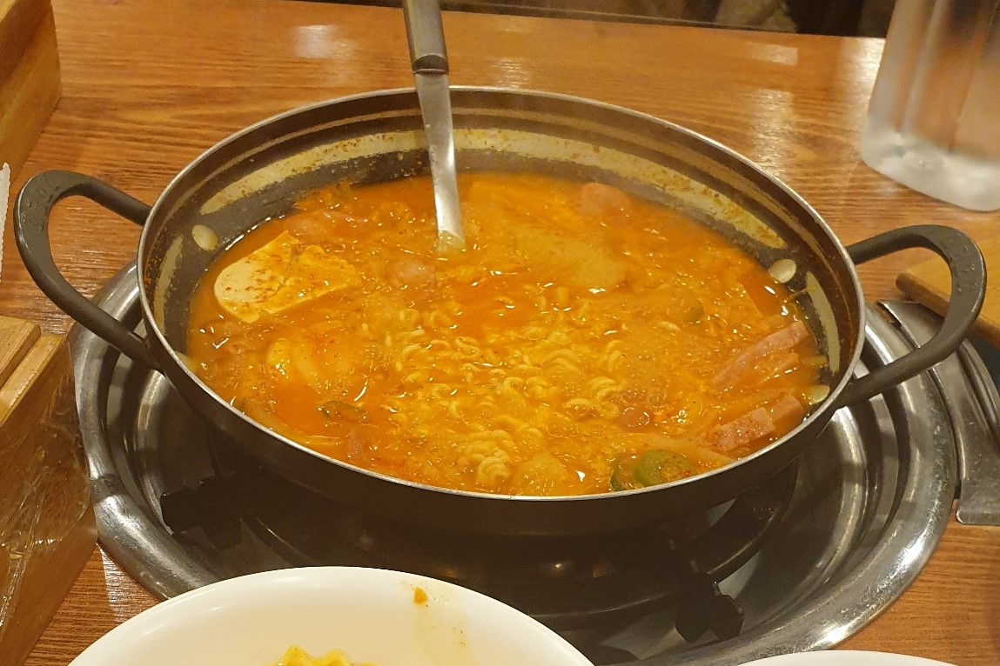
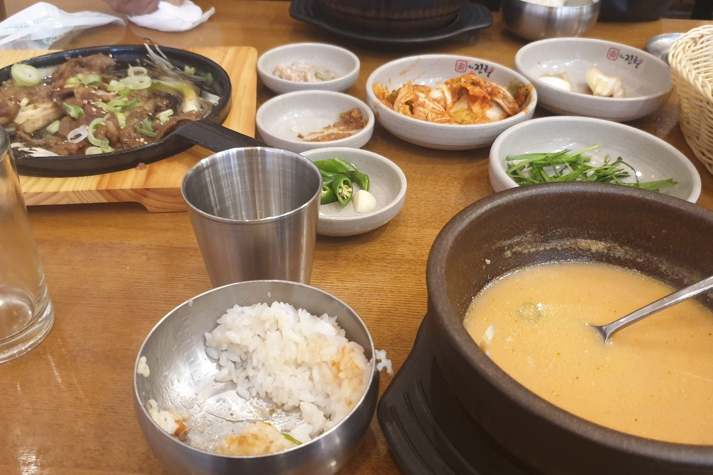
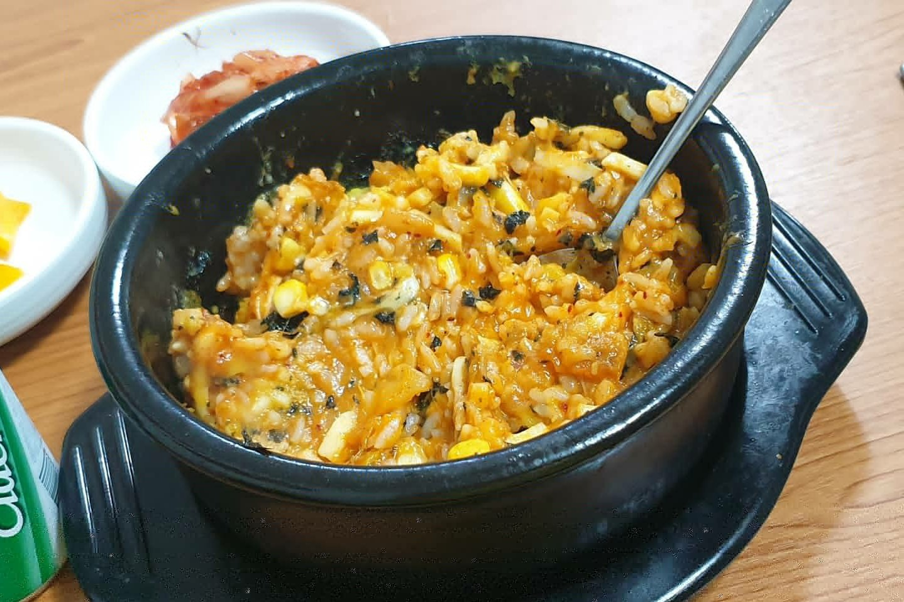

다부찌
위치: 관악구 호암로24길 43 (신림동), 대학동치안센터 정류장 근처
부대찌개는 먹고 싶은데 같이 먹을 사람이 없다고요? 걱정하지 마세요! 6,500원만 내면 얼큰한 부대찌개 1인분에, 치즈사리랑 라면사리까지 즐길 수 있답니다. 서비스로 감자튀김도 주고, 밥도 무한리필이라 정말 든든해요!
더 진국
위치: 관악구 신림로11길 17, 대학동치안센터 정류장 근처
국밥과 순대 볶음, 직화구이 정식을 먹을 수 있는 무난한 한식집입니다. 특히 직화구이 정식을 시키면 상추쌈이랑 얼큰한 국밥이 같이 나오는데, 정말 든든합니다. 특히 전날 밤에 술을 엄청나게 마셨을 때 해장하기에 좋습니다.
술렁술렁

위치: 관악구 대학5길 14 (신림동), 대학동치안센터 정류장 근처
혼자서 밥 먹기에 좋은 고기밥집입니다! 규동, 돈까스 덮밥, 김치 삼겹살 덮밥 등 다양한 밥을 즐길 수 있습니다. 1인분치고는 양이 많아서 저녁 먹기에 딱 좋습니다. tmi로는 이곳이 원래는 술집이었는데, 언젠가부터 밥집으로 바뀌었다고 하네요!
치즈밥있슈
위치: 관악구 장군봉길 20 (봉천동), 봉천역 3번 출구 근처
닭갈비 먹은 다음에 치즈사리 뿌리고, 밥 볶아먹는 느낌... 잘 알죠? 치즈 볶음밥은 먹고 싶은데 닭갈비까지 먹기 부담스럽다면 이곳이 딱입니다. 제육, 날치알, 갈비 베이컨, 스팸, 고구마, 갈비 등 여러분의 입을 만족시킬 메뉴도 다양합니다.